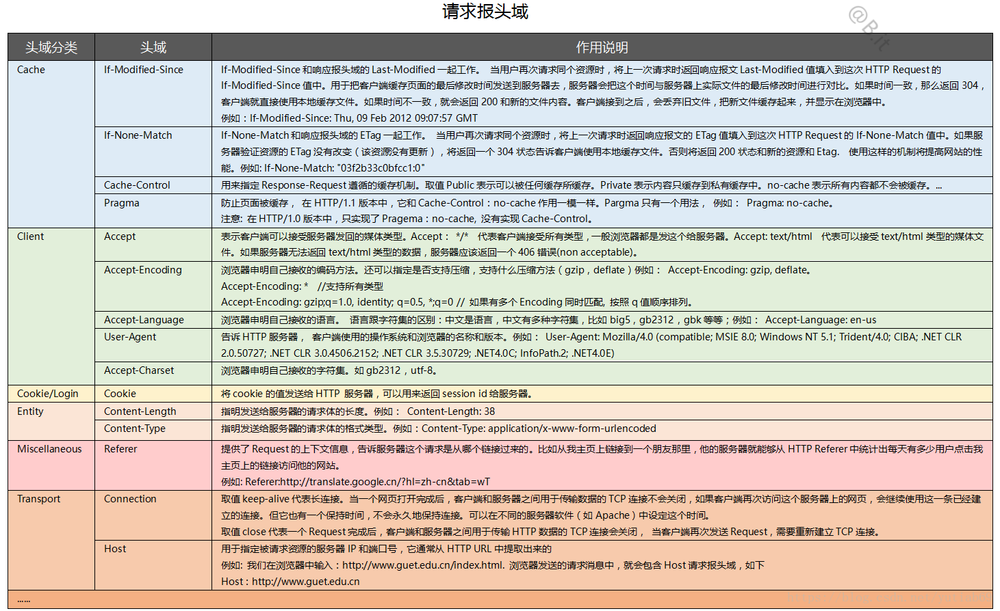
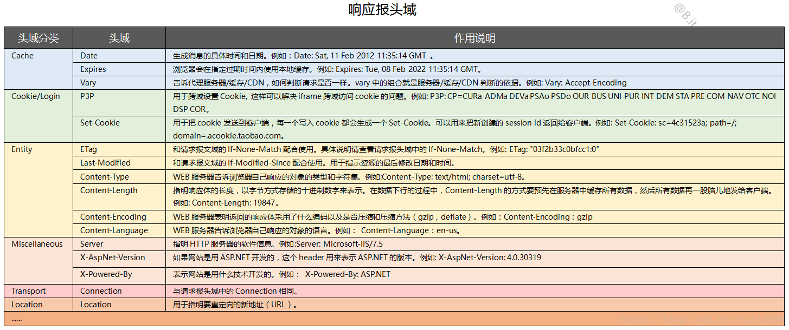

<!-- build time:Thu Aug 27 2020 10:35:44 GMT+0800 (GMT+08:00) --><!DOCTYPE html><html lang="zh"><head><meta name="generator" content="Hexo 3.9.0"><meta charset="utf-8"><meta http-equiv="X-UA-Compatible" content="IE=edge,chrome=1"><meta name="viewport" content="width=device-width,initial-scale=1,maximum-scale=1,minimum-scale=1,user-scalable=no,minimal-ui"><meta name="renderer" content="webkit"><meta http-equiv="Cache-Control" content="no-transform"><meta http-equiv="Cache-Control" content="no-siteapp"><meta name="apple-mobile-web-app-capable" content="yes"><meta name="apple-mobile-web-app-status-bar-style" content="black"><meta name="format-detection" content="telephone=no,email=no,adress=no"><meta name="theme-color" content="#000000"><meta http-equiv="window-target" content="_top"><title>HTTP协议（上） | Anily&#39;s Blog</title><meta name="description" content="HTTP请求模型两端：客户端（Client）、服务端（Server）服务器响应客户端请求浏览器行为与HTTP协议：输入网址（判断网络是否连接，是否可以发送互联网请求）解析域名（根据域名IP地址查询DNS服务器）浏览器发送HTTP请求（传输HTTP数据包）服务器处理请求（远端服务器接收HTTP数据包）服务器返回HTML响应（接收后响应并返回）浏览器处理HTML页面（浏览器渲染）继续请求其他资源什么是"><meta name="keywords" content="HTTP"><meta property="og:type" content="article"><meta property="og:title" content="HTTP协议（上）"><meta property="og:url" content="https://liushuai97.github.io/2019/11/26/HTTP协议（上）/index.html"><meta property="og:site_name" content="随笔"><meta property="og:description" content="HTTP请求模型两端：客户端（Client）、服务端（Server）服务器响应客户端请求浏览器行为与HTTP协议：输入网址（判断网络是否连接，是否可以发送互联网请求）解析域名（根据域名IP地址查询DNS服务器）浏览器发送HTTP请求（传输HTTP数据包）服务器处理请求（远端服务器接收HTTP数据包）服务器返回HTML响应（接收后响应并返回）浏览器处理HTML页面（浏览器渲染）继续请求其他资源什么是"><meta property="og:locale" content="zh-CN"><meta property="og:image" content="https://liushuai97.github.io/2019/11/26/HTTP协议（上）/Request.png"><meta property="og:image" content="https://liushuai97.github.io/2019/11/26/HTTP协议（上）/response.png"><meta property="og:updated_time" content="2019-11-26T06:22:32.000Z"><meta name="twitter:card" content="summary"><meta name="twitter:title" content="HTTP协议（上）"><meta name="twitter:description" content="HTTP请求模型两端：客户端（Client）、服务端（Server）服务器响应客户端请求浏览器行为与HTTP协议：输入网址（判断网络是否连接，是否可以发送互联网请求）解析域名（根据域名IP地址查询DNS服务器）浏览器发送HTTP请求（传输HTTP数据包）服务器处理请求（远端服务器接收HTTP数据包）服务器返回HTML响应（接收后响应并返回）浏览器处理HTML页面（浏览器渲染）继续请求其他资源什么是"><meta name="twitter:image" content="https://liushuai97.github.io/2019/11/26/HTTP协议（上）/Request.png"><link rel="canonical" href="https://liushuai97.github.io/2019/11/26/HTTP协议（上）/index.html"><link rel="alternate" href="/atom.xml" title="随笔" type="application/atom+xml"><link rel="icon" href="/favicon.png" type="image/x-icon"><link rel="stylesheet" href="/css/style.css"><link rel="stylesheet" href="//cdn.jsdelivr.net/npm/gitalk@1.4.0/dist/gitalk.min.css"></head><body class="main-center theme-black" itemscope itemtype="http://schema.org/WebPage"><header class="header" itemscope itemtype="http://schema.org/WPHeader"><div class="slimContent"><div class="navbar-header"><div class="profile-block text-center"><a id="avatar" href="https://github.com/liushuai97" target="_blank"></a><h2 id="name" class="hidden-xs hidden-sm">Anily</h2><h3 id="title" class="hidden-xs hidden-sm hidden-md">前端 &amp; Web Developer</h3><small id="location" class="text-muted hidden-xs hidden-sm"><i class="icon icon-map-marker"></i> AnHui·China</small></div><div class="search" id="search-form-wrap"><form class="search-form sidebar-form"><div class="input-group"><input type="text" class="search-form-input form-control" placeholder="搜索"> <span class="input-group-btn"><button type="submit" class="search-form-submit btn btn-flat" onclick="return!1"><i class="icon icon-search"></i></button></span></div></form><div class="ins-search"><div class="ins-search-mask"></div><div class="ins-search-container"><div class="ins-input-wrapper"><input type="text" class="ins-search-input" placeholder="想要查找什么..." x-webkit-speech> <button type="button" class="close ins-close ins-selectable" data-dismiss="modal" aria-label="Close"><span aria-hidden="true">×</span></button></div><div class="ins-section-wrapper"><div class="ins-section-container"></div></div></div></div></div><button class="navbar-toggle collapsed" type="button" data-toggle="collapse" data-target="#main-navbar" aria-controls="main-navbar" aria-expanded="false"><span class="sr-only">Toggle navigation</span> <span class="icon-bar"></span> <span class="icon-bar"></span> <span class="icon-bar"></span></button></div><nav id="main-navbar" class="collapse navbar-collapse" itemscope itemtype="http://schema.org/SiteNavigationElement" role="navigation"><ul class="nav navbar-nav main-nav"><li class="menu-item menu-item-home"><a href="/."><i class="icon icon-home-fill"></i> <span class="menu-title">首页</span></a></li><li class="menu-item menu-item-archives"><a href="/archives"><i class="icon icon-archives-fill"></i> <span class="menu-title">归档</span></a></li><li class="menu-item menu-item-categories"><a href="/categories"><i class="icon icon-folder"></i> <span class="menu-title">分类</span></a></li><li class="menu-item menu-item-tags"><a href="/tags"><i class="icon icon-tags"></i> <span class="menu-title">标签</span></a></li><li class="menu-item menu-item-about"><a href="/about"><i class="icon icon-cup-fill"></i> <span class="menu-title">关于</span></a></li></ul><ul class="social-links"><li><a href="https://github.com/liushuai97" target="_blank" title="Github" data-toggle="tooltip" data-placement="top"><i class="icon icon-github"></i></a></li><li><a href="http://weibo.com/u/2547768850" target="_blank" title="Weibo" data-toggle="tooltip" data-placement="top"><i class="icon icon-weibo"></i></a></li><li><a href="/atom.xml" target="_blank" title="Rss" data-toggle="tooltip" data-placement="top"><i class="icon icon-rss"></i></a></li></ul></nav></div></header><aside class="sidebar" itemscope itemtype="http://schema.org/WPSideBar"><div class="slimContent"><div class="widget"><h3 class="widget-title">公告</h3><div class="widget-body"><div id="board"><div class="content"><p>欢迎交流与分享经验!</p></div></div></div></div><div class="widget"><h3 class="widget-title">分类</h3><div class="widget-body"><ul class="category-list"><li class="category-list-item"><a class="category-list-link" href="/categories/CSS/">CSS</a><span class="category-list-count">5</span></li><li class="category-list-item"><a class="category-list-link" href="/categories/ES6/">ES6</a><span class="category-list-count">6</span></li><li class="category-list-item"><a class="category-list-link" href="/categories/HTML/">HTML</a><span class="category-list-count">7</span></li><li class="category-list-item"><a class="category-list-link" href="/categories/HTTP/">HTTP</a><span class="category-list-count">6</span></li><li class="category-list-item"><a class="category-list-link" href="/categories/JavaScript/">JavaScript</a><span class="category-list-count">57</span></li><li class="category-list-item"><a class="category-list-link" href="/categories/Linux/">Linux</a><span class="category-list-count">3</span></li><li class="category-list-item"><a class="category-list-link" href="/categories/Nodejs/">Nodejs</a><span class="category-list-count">1</span></li><li class="category-list-item"><a class="category-list-link" href="/categories/QA/">QA</a><span class="category-list-count">1</span></li><li class="category-list-item"><a class="category-list-link" href="/categories/React/">React</a><span class="category-list-count">3</span></li><li class="category-list-item"><a class="category-list-link" href="/categories/TypeScript/">TypeScript</a><span class="category-list-count">1</span></li><li class="category-list-item"><a class="category-list-link" href="/categories/Web/">Web</a><span class="category-list-count">1</span></li><li class="category-list-item"><a class="category-list-link" href="/categories/函数式编程/">函数式编程</a><span class="category-list-count">1</span></li></ul></div></div><div class="widget"><h3 class="widget-title">标签</h3><div class="widget-body"><ul class="tag-list"><li class="tag-list-item"><a class="tag-list-link" href="/tags/CSS/">CSS</a><span class="tag-list-count">5</span></li><li class="tag-list-item"><a class="tag-list-link" href="/tags/ES6/">ES6</a><span class="tag-list-count">6</span></li><li class="tag-list-item"><a class="tag-list-link" href="/tags/HTML/">HTML</a><span class="tag-list-count">7</span></li><li class="tag-list-item"><a class="tag-list-link" href="/tags/HTTP/">HTTP</a><span class="tag-list-count">6</span></li><li class="tag-list-item"><a class="tag-list-link" href="/tags/JavaScript/">JavaScript</a><span class="tag-list-count">57</span></li><li class="tag-list-item"><a class="tag-list-link" href="/tags/Linux/">Linux</a><span class="tag-list-count">3</span></li><li class="tag-list-item"><a class="tag-list-link" href="/tags/Nodejs/">Nodejs</a><span class="tag-list-count">1</span></li><li class="tag-list-item"><a class="tag-list-link" href="/tags/QA/">QA</a><span class="tag-list-count">1</span></li><li class="tag-list-item"><a class="tag-list-link" href="/tags/React/">React</a><span class="tag-list-count">3</span></li><li class="tag-list-item"><a class="tag-list-link" href="/tags/TypeScript/">TypeScript</a><span class="tag-list-count">1</span></li><li class="tag-list-item"><a class="tag-list-link" href="/tags/Web/">Web</a><span class="tag-list-count">1</span></li><li class="tag-list-item"><a class="tag-list-link" href="/tags/函数式编程/">函数式编程</a><span class="tag-list-count">1</span></li></ul></div></div><div class="widget"><h3 class="widget-title">标签云</h3><div class="widget-body tagcloud"><a href="/tags/CSS/" style="font-size:13.4px">CSS</a> <a href="/tags/ES6/" style="font-size:13.6px">ES6</a> <a href="/tags/HTML/" style="font-size:13.8px">HTML</a> <a href="/tags/HTTP/" style="font-size:13.6px">HTTP</a> <a href="/tags/JavaScript/" style="font-size:14px">JavaScript</a> <a href="/tags/Linux/" style="font-size:13.2px">Linux</a> <a href="/tags/Nodejs/" style="font-size:13px">Nodejs</a> <a href="/tags/QA/" style="font-size:13px">QA</a> <a href="/tags/React/" style="font-size:13.2px">React</a> <a href="/tags/TypeScript/" style="font-size:13px">TypeScript</a> <a href="/tags/Web/" style="font-size:13px">Web</a> <a href="/tags/函数式编程/" style="font-size:13px">函数式编程</a></div></div><div class="widget"><h3 class="widget-title">归档</h3><div class="widget-body"><ul class="archive-list"><li class="archive-list-item"><a class="archive-list-link" href="/archives/2020/03/">三月 2020</a><span class="archive-list-count">1</span></li><li class="archive-list-item"><a class="archive-list-link" href="/archives/2019/11/">十一月 2019</a><span class="archive-list-count">19</span></li><li class="archive-list-item"><a class="archive-list-link" href="/archives/2019/10/">十月 2019</a><span class="archive-list-count">19</span></li><li class="archive-list-item"><a class="archive-list-link" href="/archives/2019/09/">九月 2019</a><span class="archive-list-count">39</span></li><li class="archive-list-item"><a class="archive-list-link" href="/archives/2019/08/">八月 2019</a><span class="archive-list-count">14</span></li></ul></div></div><div class="widget"><h3 class="widget-title">最新文章</h3><div class="widget-body"><ul class="recent-post-list list-unstyled no-thumbnail"><li><div class="item-inner"><p class="item-category"><a class="category-link" href="/categories/TypeScript/">TypeScript</a></p><p class="item-title"><a href="/2020/03/19/TS基础语法/" class="title">TS基础语法</a></p><p class="item-date"><time datetime="2020-03-19T08:04:12.000Z" itemprop="datePublished">2020-03-19</time></p></div></li><li><div class="item-inner"><p class="item-category"><a class="category-link" href="/categories/Web/">Web</a></p><p class="item-title"><a href="/2019/11/30/BFF架构代码实践/" class="title">BFF架构代码实践</a></p><p class="item-date"><time datetime="2019-11-30T02:24:33.000Z" itemprop="datePublished">2019-11-30</time></p></div></li><li><div class="item-inner"><p class="item-category"><a class="category-link" href="/categories/Linux/">Linux</a></p><p class="item-title"><a href="/2019/11/29/服务器免密登录/" class="title">服务器免密登录</a></p><p class="item-date"><time datetime="2019-11-29T02:29:33.000Z" itemprop="datePublished">2019-11-29</time></p></div></li><li><div class="item-inner"><p class="item-category"><a class="category-link" href="/categories/JavaScript/">JavaScript</a></p><p class="item-title"><a href="/2019/11/28/JavaScript-自测题20/" class="title">JavaScript-自测题20</a></p><p class="item-date"><time datetime="2019-11-28T07:18:17.000Z" itemprop="datePublished">2019-11-28</time></p></div></li><li><div class="item-inner"><p class="item-category"><a class="category-link" href="/categories/JavaScript/">JavaScript</a></p><p class="item-title"><a href="/2019/11/28/JavaScript-自测题19/" class="title">JavaScript-自测题19</a></p><p class="item-date"><time datetime="2019-11-28T07:18:11.000Z" itemprop="datePublished">2019-11-28</time></p></div></li></ul></div></div></div></aside><aside class="sidebar sidebar-toc collapse" id="collapseToc" itemscope itemtype="http://schema.org/WPSideBar"><div class="slimContent"><nav id="toc" class="article-toc"><h3 class="toc-title">文章目录</h3><ol class="toc"><li class="toc-item toc-level-4"><a class="toc-link" href="#HTTP请求模型"><span class="toc-number">1.</span> <span class="toc-text">HTTP请求模型</span></a></li><li class="toc-item toc-level-4"><a class="toc-link" href="#什么是HTTP协议"><span class="toc-number">2.</span> <span class="toc-text">什么是HTTP协议</span></a></li><li class="toc-item toc-level-4"><a class="toc-link" href="#了解TCP-IP协议栈"><span class="toc-number">3.</span> <span class="toc-text">了解TCP/IP协议栈</span></a></li><li class="toc-item toc-level-4"><a class="toc-link" href="#在TCP-IP协议栈中的位置"><span class="toc-number">4.</span> <span class="toc-text">在TCP/IP协议栈中的位置</span></a></li><li class="toc-item toc-level-4"><a class="toc-link" href="#HTTP的工作过程"><span class="toc-number">5.</span> <span class="toc-text">HTTP的工作过程</span></a></li><li class="toc-item toc-level-4"><a class="toc-link" href="#请求和响应"><span class="toc-number">6.</span> <span class="toc-text">请求和响应</span></a></li><li class="toc-item toc-level-4"><a class="toc-link" href="#请求方法"><span class="toc-number">7.</span> <span class="toc-text">请求方法</span></a></li><li class="toc-item toc-level-4"><a class="toc-link" href="#HTTP状态码"><span class="toc-number">8.</span> <span class="toc-text">HTTP状态码</span></a></li><li class="toc-item toc-level-4"><a class="toc-link" href="#请求报头域"><span class="toc-number">9.</span> <span class="toc-text">请求报头域</span></a></li><li class="toc-item toc-level-4"><a class="toc-link" href="#响应报头域"><span class="toc-number">10.</span> <span class="toc-text">响应报头域</span></a></li><li class="toc-item toc-level-4"><a class="toc-link" href="#cookies与session"><span class="toc-number">11.</span> <span class="toc-text">cookies与session</span></a></li><li class="toc-item toc-level-4"><a class="toc-link" href="#HTTP缓存机制"><span class="toc-number">12.</span> <span class="toc-text">HTTP缓存机制</span></a></li><li class="toc-item toc-level-4"><a class="toc-link" href="#了解缓存策略"><span class="toc-number">13.</span> <span class="toc-text">了解缓存策略</span></a></li></ol></nav></div></aside><main class="main" role="main"><div class="content"><article id="post-HTTP协议（上）" class="article article-type-post" itemscope itemtype="http://schema.org/BlogPosting"><div class="article-header"><h1 class="article-title" itemprop="name">HTTP协议（上）</h1><div class="article-meta"><span class="article-date"><i class="icon icon-calendar-check"></i> <a href="/2019/11/26/HTTP协议（上）/" class="article-date"><time datetime="2019-11-26T00:44:46.000Z" itemprop="datePublished">2019-11-26</time></a></span> <span class="article-category"><i class="icon icon-folder"></i> <a class="article-category-link" href="/categories/HTTP/">HTTP</a></span> <span class="article-tag"><i class="icon icon-tags"></i> <a class="article-tag-link" href="/tags/HTTP/">HTTP</a></span> <span class="article-read hidden-xs"><i class="icon icon-eye-fill" aria-hidden="true"></i> <span id="busuanzi_container_page_pv"><span id="busuanzi_value_page_pv">0</span></span></span> <span class="post-comment"><i class="icon icon-comment"></i> <a href="/2019/11/26/HTTP协议（上）/#comments" class="article-comment-link">评论</a></span> <span class="post-wordcount hidden-xs" itemprop="wordCount">字数统计: 1.4k(字)</span> <span class="post-readcount hidden-xs" itemprop="timeRequired">阅读时长: 4(分)</span></div></div><div class="article-entry marked-body" itemprop="articleBody"><h4 id="HTTP请求模型"><a href="#HTTP请求模型" class="headerlink" title="HTTP请求模型"></a>HTTP请求模型</h4><ol><li>两端：客户端（Client）、服务端（Server）</li><li>服务器响应</li><li>客户端请求</li></ol><p>浏览器行为与HTTP协议：</p><ol><li>输入网址（判断网络是否连接，是否可以发送互联网请求）</li><li>解析域名（根据域名IP地址查询DNS服务器）</li><li>浏览器发送HTTP请求（传输HTTP数据包）</li><li>服务器处理请求（远端服务器接收HTTP数据包）</li><li>服务器返回HTML响应（接收后响应并返回）</li><li>浏览器处理HTML页面（浏览器渲染）</li><li>继续请求其他资源</li></ol><h4 id="什么是HTTP协议"><a href="#什么是HTTP协议" class="headerlink" title="什么是HTTP协议"></a>什么是HTTP协议</h4><p>HTTP是超文本传输协议，从http服务器传输到本地浏览器的一种传输协议，网站就是基于HTTP协议的，例如网站的图片、CSS、JS等都是基于HTTP协议进行传输的。</p><p>HTTP协议是由客户机到服务器的请求（Request）和从服务器到客户机的响应（response）进行约束和规范。</p><h4 id="了解TCP-IP协议栈"><a href="#了解TCP-IP协议栈" class="headerlink" title="了解TCP/IP协议栈"></a>了解TCP/IP协议栈</h4><ol><li>应用层</li></ol><p>为用户提供所需要的各种服务，例如：HTTP、FTP、DNS、SMTP等</p><ol start="2"><li>传输层</li></ol><p>为应用层实体提供端到端的通信功能，保证数据包的顺序传送及数据的完整性。</p><p>该层定义了两个主要的协议：传输控制协议（TCP）和用户数据报协议（UDP）</p><ol start="3"><li>网络层</li></ol><p>主要解决主机到主机的通信问题，IP协议是网际互联网层最重要的协议</p><ol start="4"><li>网络接口层</li></ol><p>负责监视数据在主机和网络之间的交换</p><h4 id="在TCP-IP协议栈中的位置"><a href="#在TCP-IP协议栈中的位置" class="headerlink" title="在TCP/IP协议栈中的位置"></a>在TCP/IP协议栈中的位置</h4><ol><li><p>目前普遍应用版本HTTP1.1</p></li><li><p>正在逐步向HTTP2迁移</p></li><li><p>HTTP默认端口为80</p></li><li><p>HTTPS默认端口为443</p></li></ol><h4 id="HTTP的工作过程"><a href="#HTTP的工作过程" class="headerlink" title="HTTP的工作过程"></a>HTTP的工作过程</h4><p>一次HTTP操作成为一个事务，其工作过程可分为四步：</p><ol><li><p>首先客户机与服务器需要建立连接，只要单机某个超级链接，HTTP的工作开始</p></li><li><p>建立连接后，客户机发送一个请求给服务器，请求方式的格式为：统一资源标识符（URL）、协议版本号，后边是MIME信息包括请求修饰符、客户及信息和可能的内容。</p></li><li><p>服务器接到请求后，给予相应的响应信息，其格式为一个状态行，包括信息的协议版本、一个成功或错误的代码，后便是MIME信息包括服务器信息，实体信息和可能的内容。</p></li><li><p>客户端接收服务器所返回的信息通过浏览器显示在用户的显示屏上，然后客户机与服务器断开连接。</p></li></ol><p>如果在以上过程中的某一步出现错误，那么产生错误的信息将返回到客户端，有显示屏输出。对于用户来说，这些过程由HTTP自己完成的，用户只要用鼠标点击，等待信息显示就可以了。</p><h4 id="请求和响应"><a href="#请求和响应" class="headerlink" title="请求和响应"></a>请求和响应</h4><p>HTTP请求组成： 请求行、消息报头、请求正文。</p><p>HTTP响应组成： 状态行、消息报头、响应正文。</p><h4 id="请求方法"><a href="#请求方法" class="headerlink" title="请求方法"></a>请求方法</h4><p>GET： 请求获取Request-URI所标识的资源</p><p>POST： 在Request-URI所标识的资源后附加新的数据</p><p>HEAD： 请求获取有Request-URI所标识的资源的响应消息报头</p><p>PUT： 请求服务器存储一个资源，并用Request-URI作为其标识</p><p>DELETE：请求服务器删除Request-URI所标识的资源</p><p>TRACE：请求服务器回送收到的请求信息，主要用于测试或诊断。</p><p>CONNECT：HTTP/1.1协议中预留给能够将连接改为管道方式的代理服务器。</p><p>OPTIONS：请求查询服务器的性能，或者查询与资源相关的选项和需求</p><h4 id="HTTP状态码"><a href="#HTTP状态码" class="headerlink" title="HTTP状态码"></a>HTTP状态码</h4><p>状态代码有三维数字组成，第一个数字定义了响应的类别，且有五种可能取值：</p><p>1xx：指示信息–标识请求已接收，继续处理</p><p>2xx: 成功–表示请求已被成功接收、理解、接受</p><p>3xx：重定向–要完成请求必须进行更进一步的操作</p><p>4xx：客户端错误–请求有语法错误或请求无法实现</p><p>5xx：服务端错误–服务器未能实现合法的请求</p><h4 id="请求报头域"><a href="#请求报头域" class="headerlink" title="请求报头域"></a>请求报头域</h4><p></p><h4 id="响应报头域"><a href="#响应报头域" class="headerlink" title="响应报头域"></a>响应报头域</h4><p></p><h4 id="cookies与session"><a href="#cookies与session" class="headerlink" title="cookies与session"></a>cookies与session</h4><p>Cookies是保存在客户端的小段文本，岁客户端点每一个请求发送该URL下的所有cookies到服务器端。</p><p>Session则保存在服务器端，通过唯一的值sessionID来区别每一个用户，SessionID随每个连接请求发送到服务器，服务器根据SessionID来识别客户端，在通过Session的Key获取Session值。</p><h4 id="HTTP缓存机制"><a href="#HTTP缓存机制" class="headerlink" title="HTTP缓存机制"></a>HTTP缓存机制</h4><p>缓存会根据请求保存输出内容的副本，例如HTML页面、图片、文件、当下一个请求来到的时候：若果是相同的URL，缓存直接使用副本响应访问请求，而不是向源服务器再次发送请求。</p><p>缓存的有点：</p><p>减少响应的延迟</p><p>减少网络宽带消耗</p><h4 id="了解缓存策略"><a href="#了解缓存策略" class="headerlink" title="了解缓存策略"></a>了解缓存策略</h4><ol><li><p>强制缓存，服务器通知浏览器一个缓存时间，在缓存时间内，下次请求，直接用缓存，不在时间内，执行比较缓存策略。</p></li><li><p>对比缓存，将缓存信息中的Etag和Last-Modified通过请求发送给服务器，由服务器校验，返回304状态码时，浏览器直接使用缓存。</p></li><li><p>Etag/If-None-Match策略</p></li><li><p>Last-Modified/If-Modified-Since策略</p></li></ol></div><div class="article-footer"><blockquote class="mt-2x"><ul class="post-copyright list-unstyled"><li class="post-copyright-link hidden-xs"><strong>本文链接：</strong> <a href="https://liushuai97.github.io/2019/11/26/HTTP协议（上）/" title="HTTP协议（上）" target="_blank" rel="external">https://liushuai97.github.io/2019/11/26/HTTP协议（上）/</a></li><li class="post-copyright-license"><strong>版权声明： </strong>本博客所有文章除特别声明外，均采用 <a href="http://creativecommons.org/licenses/by/4.0/deed.zh" target="_blank" rel="external">CC BY 4.0 CN协议</a> 许可协议。转载请注明出处！</li></ul></blockquote><div class="panel panel-default panel-badger"><div class="panel-body"><figure class="media"><div class="media-left"><a href="https://github.com/liushuai97" target="_blank" class="img-burn thumb-sm visible-lg"></a></div><div class="media-body"><h3 class="media-heading"><a href="https://github.com/liushuai97" target="_blank"><span class="text-dark">Anily</span><small class="ml-1x">前端 &amp; Web Developer</small></a></h3><div>任何值得做的事就值得把它做好。- Whatever is worth doing is worth doing well.</div></div></figure></div></div></div></article><section id="comments"></section></div><nav class="bar bar-footer clearfix" data-stick-bottom><div class="bar-inner"><ul class="pager pull-left"><li class="prev"><a href="/2019/11/27/HTTP协议（下）/" title="HTTP协议（下）"><i class="icon icon-angle-left" aria-hidden="true"></i><span>&nbsp;&nbsp;上一篇</span></a></li><li class="next"><a href="/2019/11/25/JavaScript-QA工程师/" title="JavaScript&amp;QA工程师"><span>下一篇&nbsp;&nbsp;</span><i class="icon icon-angle-right" aria-hidden="true"></i></a></li><li class="toggle-toc"><a class="toggle-btn collapsed" data-toggle="collapse" href="#collapseToc" aria-expanded="false" title="文章目录" role="button"><span>[&nbsp;</span><span>文章目录</span> <i class="text-collapsed icon icon-anchor"></i> <i class="text-in icon icon-close"></i> <span>]</span></a></li></ul><button type="button" class="btn btn-fancy btn-donate pop-onhover bg-gradient-warning" data-toggle="modal" data-target="#donateModal"><span>赏</span></button><div class="bar-right"><div class="share-component" data-sites="weibo,qq,wechat,facebook,twitter" data-mobile-sites="weibo,qq,qzone"></div></div></div></nav><div class="modal modal-center modal-small modal-xs-full fade" id="donateModal" tabindex="-1" role="dialog"><div class="modal-dialog" role="document"><div class="modal-content donate"><button type="button" class="close" data-dismiss="modal" aria-label="Close"><span aria-hidden="true">&times;</span></button><div class="modal-body"><div class="donate-box"><div class="donate-head"><p>感谢您的支持，我会继续努力的!</p></div><div class="tab-content"><div role="tabpanel" class="tab-pane fade active in" id="alipay"><div class="donate-payimg"></div><p class="text-muted mv">扫码打赏，你说多少就多少</p><p class="text-grey">打开支付宝扫一扫，即可进行扫码打赏哦</p></div><div role="tabpanel" class="tab-pane fade" id="wechatpay"><div class="donate-payimg"></div><p class="text-muted mv">扫码打赏，你说多少就多少</p><p class="text-grey">打开微信扫一扫，即可进行扫码打赏哦</p></div></div><div class="donate-footer"><ul class="nav nav-tabs nav-justified" role="tablist"><li role="presentation" class="active"><a href="#alipay" id="alipay-tab" role="tab" data-toggle="tab" aria-controls="alipay" aria-expanded="true"><i class="icon icon-alipay"></i> 支付宝</a></li><li role="presentation"><a href="#wechatpay" role="tab" id="wechatpay-tab" data-toggle="tab" aria-controls="wechatpay" aria-expanded="false"><i class="icon icon-wepay"></i> 微信支付</a></li></ul></div></div></div></div></div></div></main><footer class="footer" itemscope itemtype="http://schema.org/WPFooter"><ul class="social-links"><li><a href="https://github.com/liushuai97" target="_blank" title="Github" data-toggle="tooltip" data-placement="top"><i class="icon icon-github"></i></a></li><li><a href="http://weibo.com/u/2547768850" target="_blank" title="Weibo" data-toggle="tooltip" data-placement="top"><i class="icon icon-weibo"></i></a></li><li><a href="/atom.xml" target="_blank" title="Rss" data-toggle="tooltip" data-placement="top"><i class="icon icon-rss"></i></a></li></ul><div class="copyright"><div class="publishby">Anily&#39;s Blog All rights reserved .</div></div></footer><script src="//cdn.jsdelivr.net/npm/jquery@1.12.4/dist/jquery.min.js"></script><script>window.jQuery||document.write('<script src="js/jquery.min.js"><\/script>')</script><script src="/js/plugin.min.js"></script><script src="/js/application.js"></script><script>!function(T){var N={TRANSLATION:{POSTS:"文章",PAGES:"页面",CATEGORIES:"分类",TAGS:"标签",UNTITLED:"(未命名)"},ROOT_URL:"/",CONTENT_URL:"/content.json"};T.INSIGHT_CONFIG=N}(window)</script><script src="/js/insight.js"></script><script async src="//busuanzi.ibruce.info/busuanzi/2.3/busuanzi.pure.mini.js"></script><script src="//cdn.jsdelivr.net/npm/gitalk@1.4.0/dist/gitalk.min.js"></script><script src="//cdn.jsdelivr.net/npm/blueimp-md5@2.10.0/js/md5.min.js"></script><script type="text/javascript">var gitalk=new Gitalk({clientID:"02bbf3b787da4ece5430",clientSecret:"34e25126109e44eb92aa169d779294720e927c15",repo:"liushuai97.github.io",owner:"liushuai97",admin:["liushuai97"],id:md5(location.pathname),distractionFreeMode:!0});gitalk.render("comments")</script></body></html><!-- rebuild by neat -->